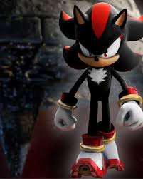
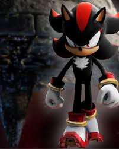
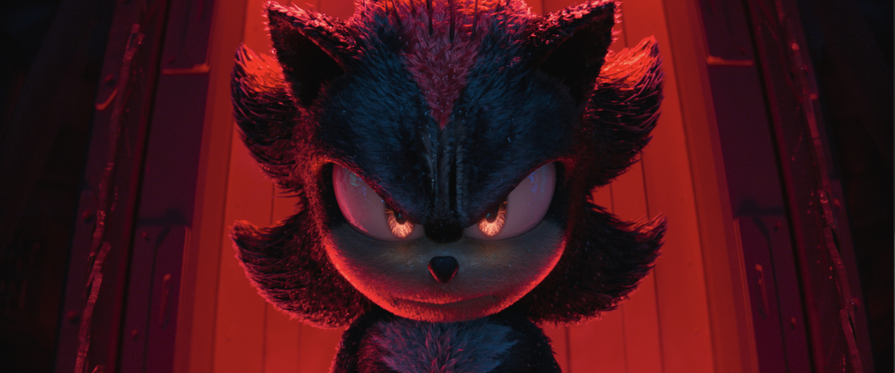

Shadow the Hedgehog 🖤🔥
"O verdadeiro poder está nas sombras."

Galeria do Shadow
 

Sobre o Shadow
Shadow the Hedgehog nasceu da dor e da tragédia. Criado pelo professor Gerald Robotnik na estação espacial ARK, sua existência foi marcada pela morte de Maria, a neta do professor, a quem ele jurou proteger. Shadow foi feito para ser a "Forma de Vida Suprema", mas foi uma criação condenada pela solidão e pela vingança. Após a morte de Maria, Shadow foi manipulado por Dr. Eggman, acreditando que Sonic era responsável pela tragédia. Mas, ao descobrir a verdade, sua missão se tornou ainda mais sombria: ele não sabia se era um herói ou um monstro.
Mesmo após se sacrificar para salvar a Terra, seu destino não foi selado. Shadow voltou, mais perdido e sombrio do que nunca, mantendo a alma marcada pela dor e pela perda. Ele é uma sombra, uma criatura que vaga entre a luz e a escuridão, com o peso do passado em seus ombros, sem saber se sua missão é vingança ou redenção.